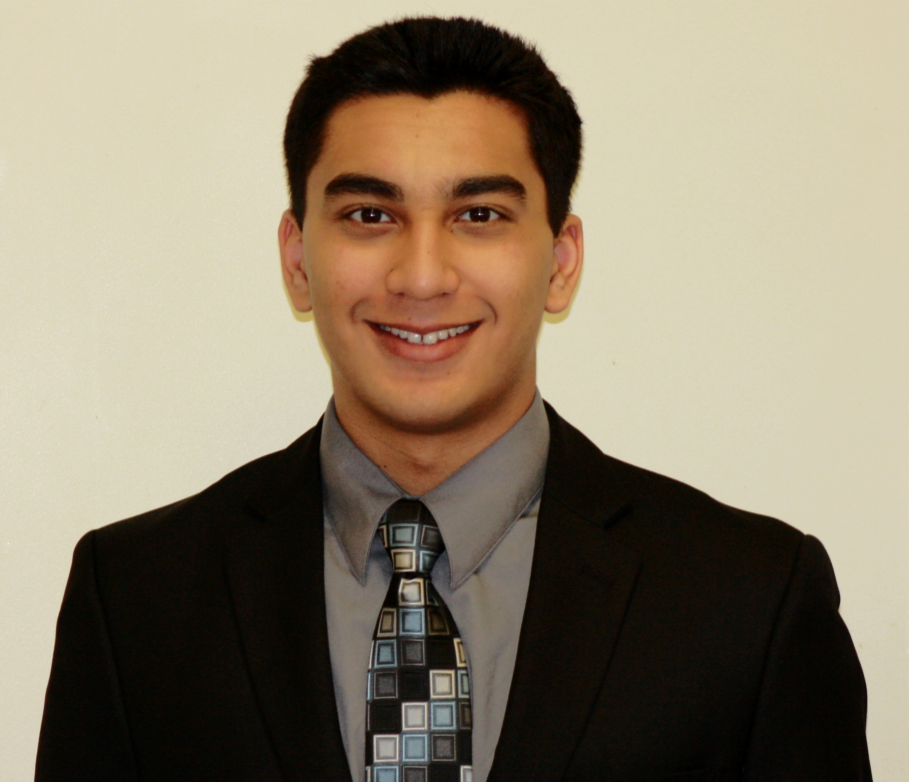
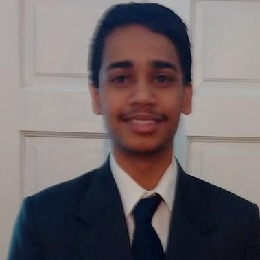

This is a volunteer run group, started in 2012 to motivate and support middle school students in STEM education. This effort has sparked the interest in science for hundreds of students. They excel in several national level competitions and their school science curriculum.
Millennium E, NE 80th St, Redmond, WA 98052
President:Hemil GajjarTesla STEM High School - 2017  Hemil expresses this enthusiasm by participating in engineering, research, and business extracurriculars. Hemil thinks passing this curiosity on to students who are developing their conceptions of the world will serve them well as they move forward. |
Co-President:
Siddharth Kulkarni  Sidh enjoys experimenting in the realms of physics, chemistry, and computer science. He hopes to foster an appreciation of STEM in younger kids and help them discover what they love. |
Leadership Team
Arpit Ranasaria - Earth Science Lead
Redmond High School - 2020
Arushi Aggarwal Interlake High School - 2019 Fred Qin Stem High School - 2018 Gireesh Maharajan - Physics Lead Lakeside High School - 2019 Kevin Cai Redmond High School - 2019 Lawrence Atienza Stem High School - 2018 Maneesh Rajagopal Eastlake High School - 2020 Ritika Iyer Stem High School - 2019
Sai Vangala
Eastlake High School - 2020
Sanjay Burugapalli Eastlake High School - 2020 Sathvik Kakanuru - Biology Lead Redmond High School - 2020 Suraj Dhulipalla Eastlake High School - 2020 Surtaz Khan - Chemistry Lead Interlake High School - 2019 Tejasree Kandibanda - Administration Lead Tesla Stem High School - 2020 Vedantha Venkatapathy - Energy Lead Tesla Stem High School - 2020 |